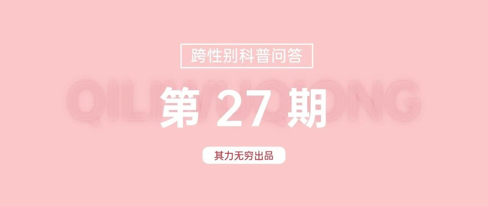

没有手术或激素的跨性别者不值得信任？｜其力无穷跨性别科普第27期
没有完成手术，也没有使用激素的跨性别者，是否不值得信任？
客观地说，确实有不法分子假借变装等手段潜入异性卫生间、浴室、宿舍等场所，实施偷窥、偷拍甚至更为恶劣的行经。
有时，这些行为由于存在着表演另一种性别外貌或者身份的情节，而会被一些人认为与跨性别相关。
但我们应当意识到，这些人并不是跨性别群体的一员，并且这些不法分子实际上也是跨性别群体在谴责和抵制的。
其次，我们也应当注意到，目前中国内地的跨性别者出于主观或者客观的种种原因，事实上往往并不存在类似于国内舆论主流认知中的“激进行为”，而是更倾向于采用非激进的方式来表达自己的需求和身份认同。
再者，跨性别者根据自身的意愿，可以选择不同程度的性别肯定方式，这并不代表其“有所保留”或“另有企图”。
每个人对于性别肯定的需求和选择都是独特的，我们应该尊重其选择和决定。
最后，必须指出的是，由于内地医疗保障体系的限制，许多跨性别者面临高额经济负担、复杂流程手续及潜在风险，难以承担性别肯定手段。
这迫使这些伙伴处于无奈状态，非其本意。
因此，构建更合理的制度保障，减轻其经济压力，简化流程，能更好地解决一些存在的问题。
文｜啵啵圆
END